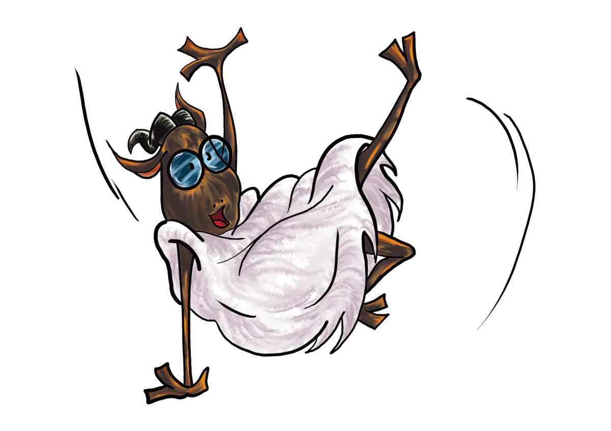

Partida bakoitzean, bi taldek hiru problema matematiko ebazten dituzte elkarren aurka. Problema bakoitza 5etik puntuatzen da, eta puntu gehien biltzen duenak irabazten du partida.

Taldeak talde batean edo gehiagotan banatuko dira, eta, talde bakoitzaren barruan, taldeek lehen postuen bila lehiatuko dira. Jardunaldi guztiak jokatu ondoren partida-puntu gehien lortu dituzten taldeak Institutuen Matematika Ligako final nagusira sailkatuko dira.
Partiden egutegi osoa Liga hasi aurretik finkatzen da. Horrez gain, lehiaketarekin lotutako asteko matematika-tailer bat eta jardunaldiak prestatzeko materialak eskaintzen saiatuko da. Tailerrak asteazkenetan egiten dira eta lehiaketak, larunbatetan.
Ligako partidek puntuazio bikoitza dute: problema-puntuak erabakitzen dute nork irabazten duen norgehiagoka bakoitza, eta partida-puntuek sailkapena erabakitzen dute.
Jardunaldiko problema bakoitza 0tik 5era baloratzen da, soluzioaren zuzentasuna eta arrazoiketa kontuan hartuta. Hiru problemei esker, talde bakoitzak gehienez 15 puntu lortu ditzake partida batean.
Talde bakoitzaren problema-puntuak batzen dira. Puntu gehien lortzen dituenak irabazten du norgehiagoka; zenbatekoa bera bada, partida berdinketan amaitzen da.
Futbol-ligan bezala: irabazteak 3 puntu ematen ditu, berdinketak 1 puntu eta galtzeak 0. Amaieran partida-puntu gehien dituen taldeak irabazten du Liga.
Talde bakoitza bere jokalariek eta ordezkari batek osatzen dute; ordezkaria da taldearen arduradun nagusia. Ordezkaria taldekideen artean aukeratzen da, taldea EHULERren aurrean ordezkatzen du eta egokitzat jotzen dituen erreklamazioak aurkezten ditu. Jokalaria ere izan daiteke.
Problemak hiru bloke nagusiren inguruan antolatzen dira, jardunaldi bakoitzean zailtasuna handituz.
Aritmetikaren oinarrizko nozioak, zenbatzeko sistemak, zatigarritasuna, ekuazio linealen sistemak, problema errealak ekuazio-sistemetara eramatea, polinomioak, berdintasunak eta desberdintasunak.
Funtzioak, zenbakien segidak, maiztasun-azterketak eta ebazpenen sistematizazioa.
Thales eta Pitagorasen teoremak, irudi geometrikoak irudikatzeko sistema analitikoak, eremuak, luzerak, erlazio trigonometrikoak eta geometriaren oinarrizko teoremak.
Bi talde edo gehiago partida-puntuetan berdinduta badaude, haien sailkapena honako irizpide hauek hurrenez hurren aplikatuz erabakiko da.
| Hurrenkera | Irizpidea |
|---|---|
| a | Taldeak Ligan lortutako problema-puntuen eta aurkariek talde horren aurkako partidetan lortutako problema-puntuen arteko alderik handiena. |
| b | Lortutako problema-puntuen guztizko kopururik handiena. |
| c | Berdinketa bi talderen artekoa denean, haien arteko partidaren emaitza. |
| d | Egindako falta oso larrien kopururik txikiena. |
| e | Egindako falta larrien kopururik txikiena. |
| f | Egindako falta arinen kopururik txikiena. |
| g | Ordena erabakigarria bada, berdinduta jarraitzen duten taldeen arteko partida gehigarri bat jokatzea; ordena garrantzitsua ez bada, taldearen izenaren araberako ordena alfabetikoa (eta ez ikastetxearen izenaren araberakoa). |